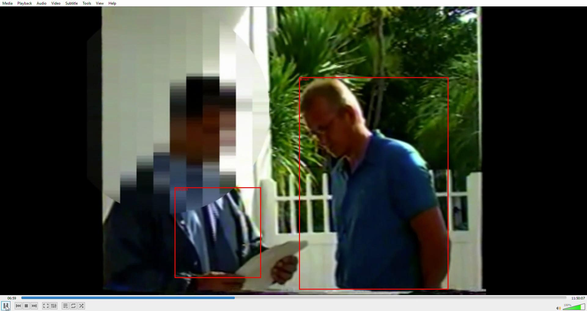
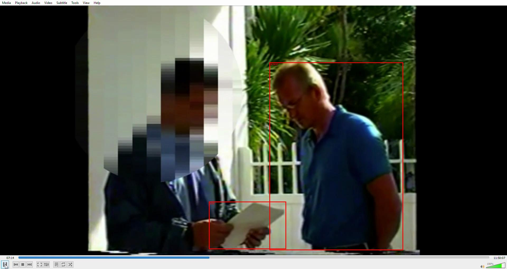
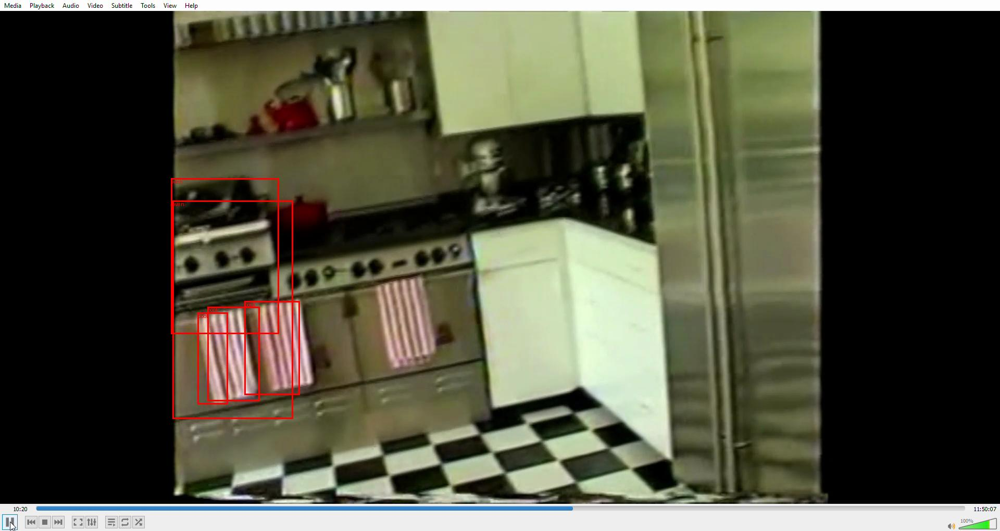
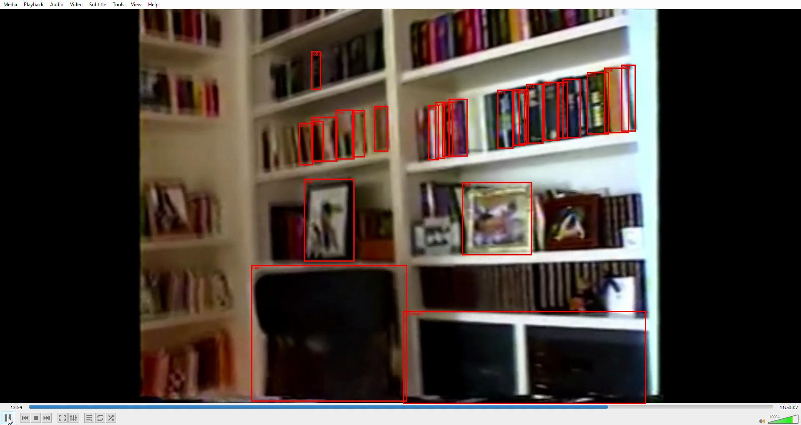
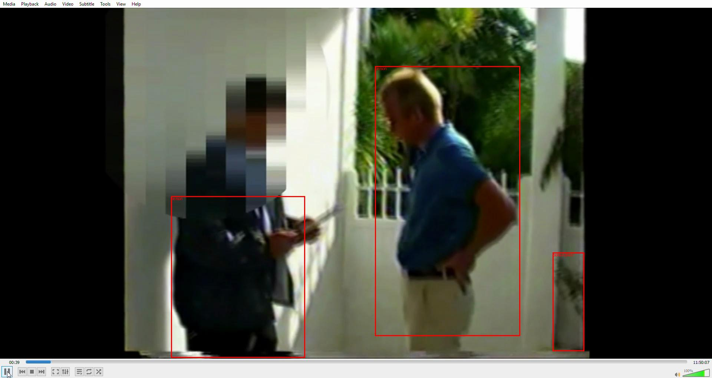
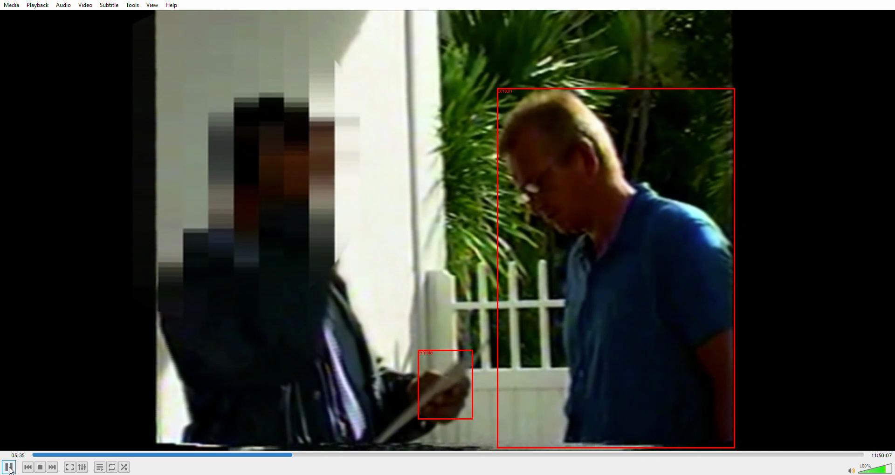

DOJ-OGR-00033293.MP4
Your browser does not support the video tag.
Detected Objects (COCO Labels)
apple
:
255s
backpack
:
330s
425s

430s
470s
book
:
250s
385s
395s
440s

445s
455s
480s
585s
600s
625s

695s
735s
795s
800s
835s
840s

845s
855s
860s
865s
875s
880s
930s
960s
970s
985s
bottle
:
585s
840s
car
:
540s
chair
:
25s
660s
665s
685s
715s
720s
735s
740s
770s
775s
795s
810s
825s
840s
855s
865s
940s
950s
960s
990s
couch
:
915s
cup
:
345s
665s
685s
865s
870s
930s
dog
:
770s
donut
:
895s
fork
:
705s
handbag
:
85s
knife
:
95s
100s
110s
280s
285s
290s
295s
320s
460s
465s
laptop
:
470s
microwave
:
840s
oven
:
580s
585s
620s
625s
845s
person
:
25s
40s
45s

65s
80s
135s
145s
160s
170s
180s
185s
205s
210s
240s
335s
350s
415s
450s
665s
670s
715s
770s
790s
810s
875s
1055s
refrigerator
:
630s
remote
:
25s
145s
340s

350s
360s
365s
sink
:
585s
tv
:
665s
710s
815s
835s
860s
1060s
vase
:
720s
920s
1075s